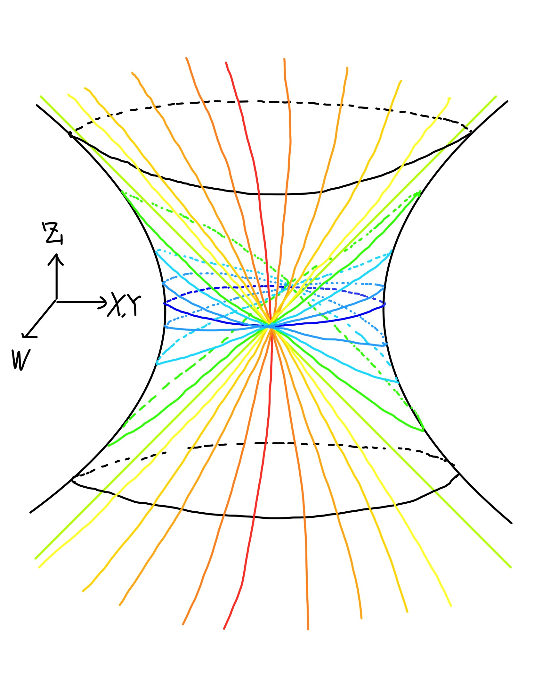

$\mathfrak{sl}(2,\mathbb{R})$の指数写像を計算します。
$\mathfrak{sl}(2)$の特殊事情により、計算結果が馴染み深い関数
のみで書けることが分かります。
$\mathfrak{sl}(2,\mathbb{R})=\{X\in M(2,\mathbb{R}) \;; \mathrm{tr}X=0\}$
$SL(2,\mathbb{R})=\{X\in M(2,\mathbb{R}) \;; \det X=1\}$
とし、
$\exp \:: \mathfrak{sl}(2,\mathbb{R})\rightarrow SL(2,\mathbb{R})$ を、$\exp X = \displaystyle\sum_{n=1}^{\infty} \displaystyle\frac{X^n}{n!}$で定めます。
また、$\displaystyle\sum_{n=0}^{\infty}
\displaystyle\frac{x^n}{(2n)!}$、
$\displaystyle\sum_{n=0}^{\infty}
\displaystyle\frac{x^n}{(2n+1)!}\,$を、
各々、$\cosh\sqrt{x}\,$、$\displaystyle\frac{\sinh\sqrt{x}}{\sqrt{x}}\,$と書きます。
$x < 0 \,$のとき、$\cosh\sqrt{x}=\cos \sqrt{-x}$、$\displaystyle\frac{\sinh\sqrt{x}}{\sqrt{x}}=\frac{\sin \sqrt{-x}}{\sqrt{x}}$
となります。
となる。
ここで、$r=\sqrt {x^2+y^2-z^2}\,$である。
$
\begin{pmatrix}
x & y-z \\
y+z & -x \\
\end{pmatrix}^2
$
$
=
\begin{pmatrix}
x^2+y^2-z^2 & 0 \\
0 & x^2+y^2-z^2 \\
\end{pmatrix}$
なので、
$\exp
\begin{pmatrix}
x & y-z\\
y+z & -x \\
\end{pmatrix}
$
$SL(2,\mathbb{R})$を、
この表示のもと、 $\exp \begin{pmatrix} x & y-z \\ y+z & -x \\ \end{pmatrix} $は、
$\left\{ \begin{array}{l} \displaystyle W = \cosh r \\ \displaystyle X = x\frac{\sinh r}{r}\\ \displaystyle Y = y \frac{\sinh r}{r}\\ \displaystyle Z = z\frac{\sinh r}{r}\\ \end{array} \right.$
と書けます。ここで、$(x^2+y^2-z^2 < 0$の場合も含めて)$\,r=\sqrt{x^2+y^2-z^2}$としました。
曲線
$\gamma (t)=\exp t
\begin{pmatrix}
x & y-z \\
y+z & -x\\
\end{pmatrix}
$
の族を図示してみましょう。
以下のようになります。

この曲線族は、$g=dw^2-dx^2-dy^2+dz^2$という(擬)計量に関する測地線になるので、以下測地線と呼ぶことにします。
さて、この図も合わせて観察をしてみましょう。
図と式をよく見ると、測地線の性格が、3通りあるのが分かります。
3通りを具体的に書くと、